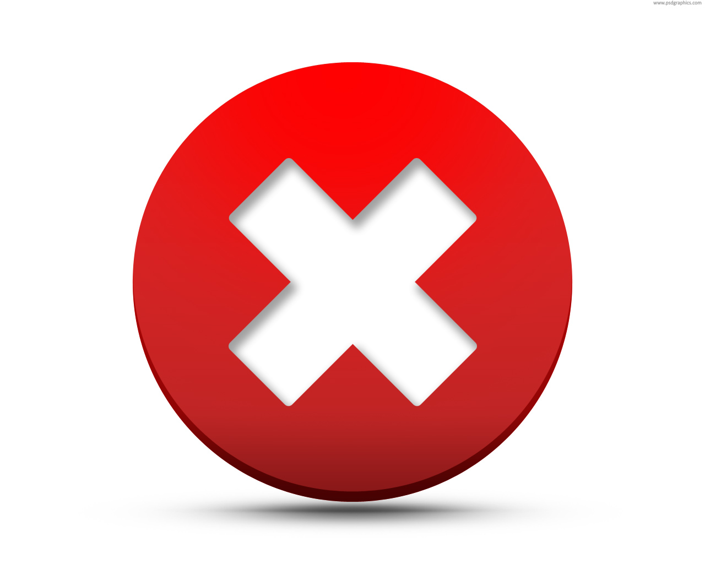

<link rel="import" href="../../bower_components/paper-button/paper-button.html" />
<link rel="import" href="../../bower_components/core-ajax/core-ajax.html" />

<polymer-element name="feed-delete" attributes="feed updater" >
  <template>
    <paper-button on-click="{{deleteFeed}}"></paper-button>
    <core-ajax id="deleteFeedAjax" url="/app/feed" method="DELETE" contentType="application/json" ></core-ajax>
  </template>
  <script>
    Polymer({
      feed : null,
      updater : null,

      deleteFeed : function() {
        var ajax = this.$.deleteFeedAjax;
        ajax.url = "/app/feed?id=" + this.feed.id;
        ajax.go();

        this.fire("delete");
        //this.ownerDocument.getElementsByTagName("feed-page").update();
      }
            });
  </script>
</polymer-element>